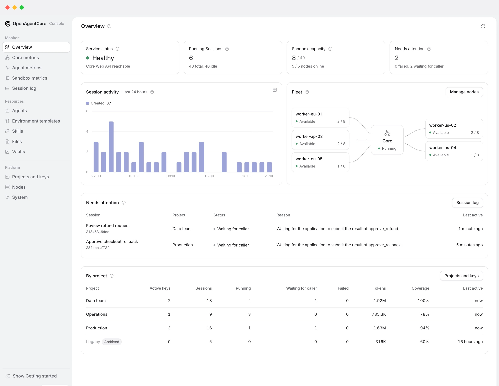
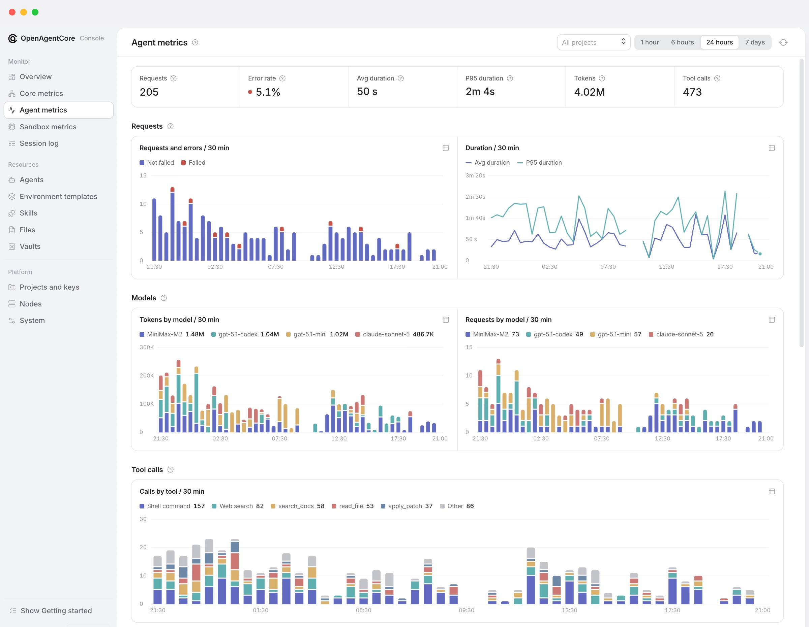

Bir nechta mahalliy jabduqlar bilan OpenAI Agents API-ning ochiq kodli, o'z-o'zini boshqarish tizimida amalga oshirilishi.
Veb-sayt · O'rnatish · API ga qo'ng'iroq qilish · Hujjatlar · Hissa qo'shish
OpenAgentCore sun'iy intellekt agentlarini OpenAI Agents API orqasidagi o'z infratuzilmangizda ishga tushiradi .
- OpenAI bilan bir xil API. O'rnatishingizga OpenAI Agent API yoki oddiy HTTP ni yo'naltiring . O'rganish uchun yangi mijoz yo'q.
- Agentni tanlashingiz. Har bir sessiya siz sozlagan model provayderi bilan mahalliy jabduqni ishga tushiradi : Codex , Claude Code yoki MiniMax Code .
- Qayta foydalanish mumkin bo'lgan hisoblash, doimiy ish joylari. Biz mustaqil ish joyini saqlash imkoniyatiga ega mikrosandboxni tavsiya qilamiz : bo'sh turgan sandboxlar mos keladigan tugunlarda hisoblashni to'xtatib turadi, qo'yib yuboradi va davom ettiradi. E2B boshqariladigan alternativa hisoblanadi; Docker va sizning Linux, macOS yoki Windows mashinangiz qo'llab-quvvatlanadigan ijro etish variantlari bo'lib qoladi.
- Har bir qism almashtirilishi mumkin. Sandboxlar , ish maydoni fayl tizimlari , jabduqlar va model provayderlari belgilangan protokollar orqali ulanadi .
Ilovalar va operatorlar ushbu Core API-laridan foydalanadilar:
| API | Yo'l | Foydalanuvchi |
|---|---|---|
| Agentlar APIsi | /v1 |
Ilovalaringiz. OpenAI Agents API bilan bir xil protokol |
| Asosiy API | /core/v1 |
Operatorlar, veb orqali |
Core barqaror ijro holatini saqlaydi. Runtime tanlangan jabduqni Atrof-muhit ichida ishga tushiradi. Har bir ulanish belgilangan protokol hisoblanadi, shuning uchun har qanday qismni o'zi almashtirish mumkin. Arxitektura qo'llanmasiga qarang .
| Umumiy ma'lumot | Agent ko'rsatkichlari |
|---|---|
 |
 |
Linux yoki macOS da Docker konfiguratsiyasi bilan :
curl -fsSL https://github.com/MiniMax-AI/OpenAgentCore/releases/latest/download/install.sh | bashWindows PowerShell:
irm https://github.com/MiniMax-AI/OpenAgentCore/releases/latest/download/install.ps1 | iexKeyin:
- O'rnatuvchi tomonidan yaratilgan Core kaliti bilan Web, administrator konsoliga kiring va domen va HTTPS ni sozlang .
- Standart modelni o'rnating va Project API kalitini bering .
- Bajarish hajmini qo'shing: tugun, E2B yoki o'zingizning mashinangiz.
- Birinchi sessiyangizni OpenAI SDK bilan ishga tushiring.
O'rnatish qo'llanmasi har bir bosqichni, HTTPS va tezkor mahalliy sinovni qamrab oladi. Manzillar, portlar va boshqa variantlarni tinglang: o'rnatish variantlari .
| Men .. moqchiman | Bilan boshlang |
|---|---|
| O'rnatishni o'rnating va ishga tushiring | O'rnatish , keyin operatsiyalar |
| APIda ilova yarating | Tez boshlash , keyin Agents API qo'llanmasi |
| To'liq arizani ko'ring | Misollar |
| Agentlarni o'z mashinamda ishga tushirish | O'z-o'zidan amalga oshiriladigan ijro |
| Jabduqlar imkoniyatlari va cheklovlarini tekshiring | Jabduqlar imkoniyatlari |
| Dizaynni tushuning | Arxitektura |
| Qum qutisi, jabduq yoki boshqa komponent qo'shing | Dasturchi qo'llanmasi |
Barcha sahifalar: hujjatlar indeksi . Kodni o'zgartirishdan oldin, muallif qoidalarini o'qing .